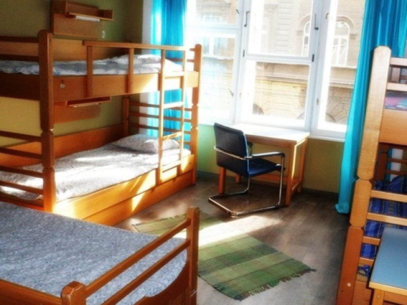
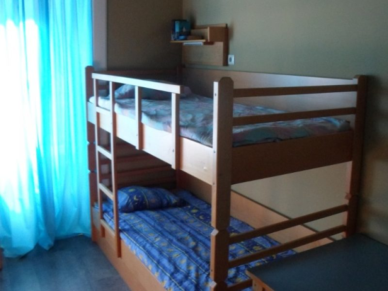
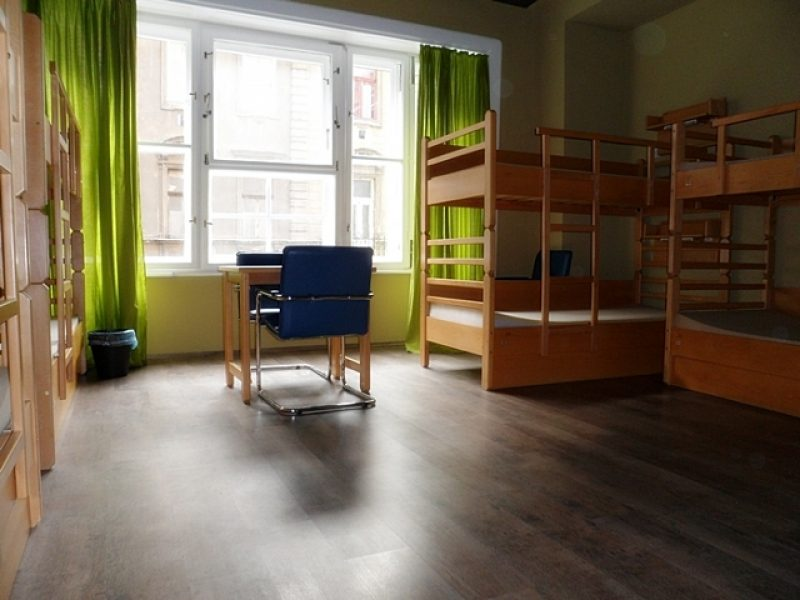
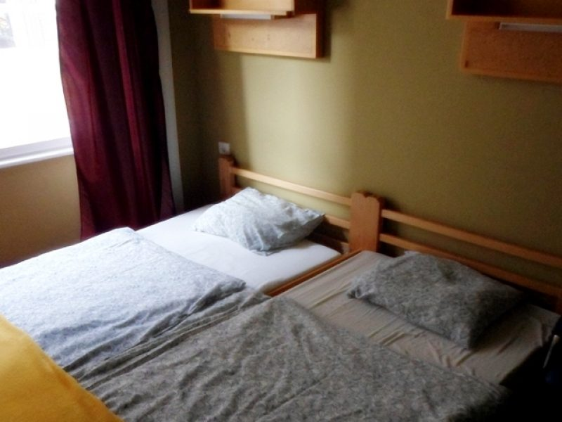
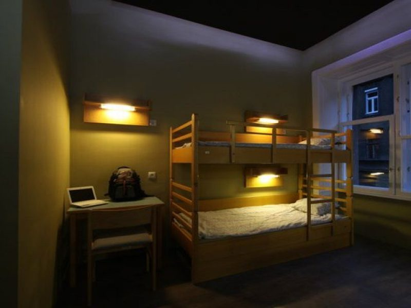
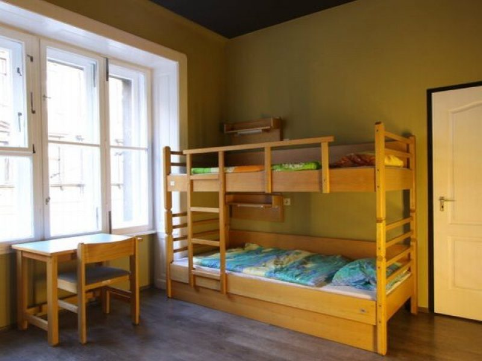
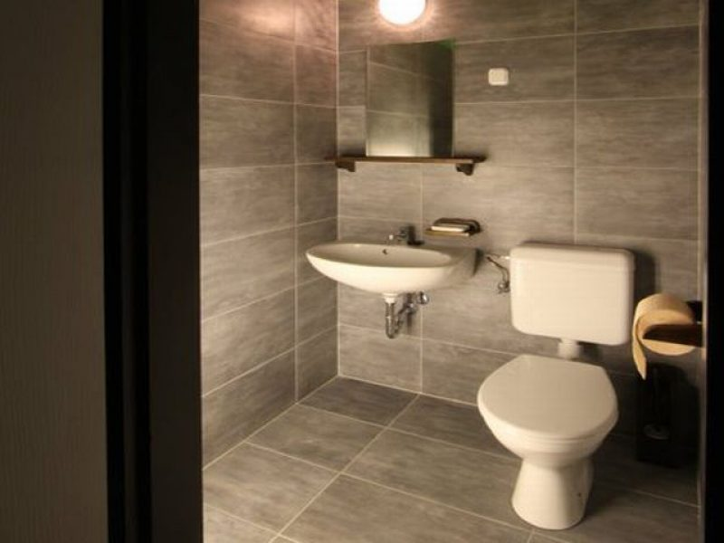
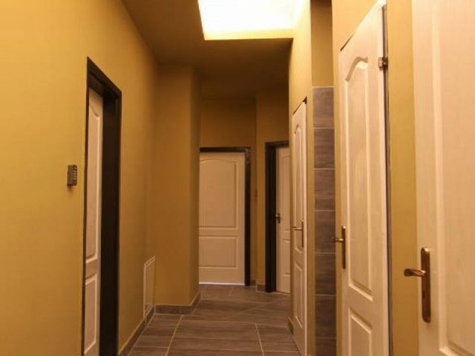
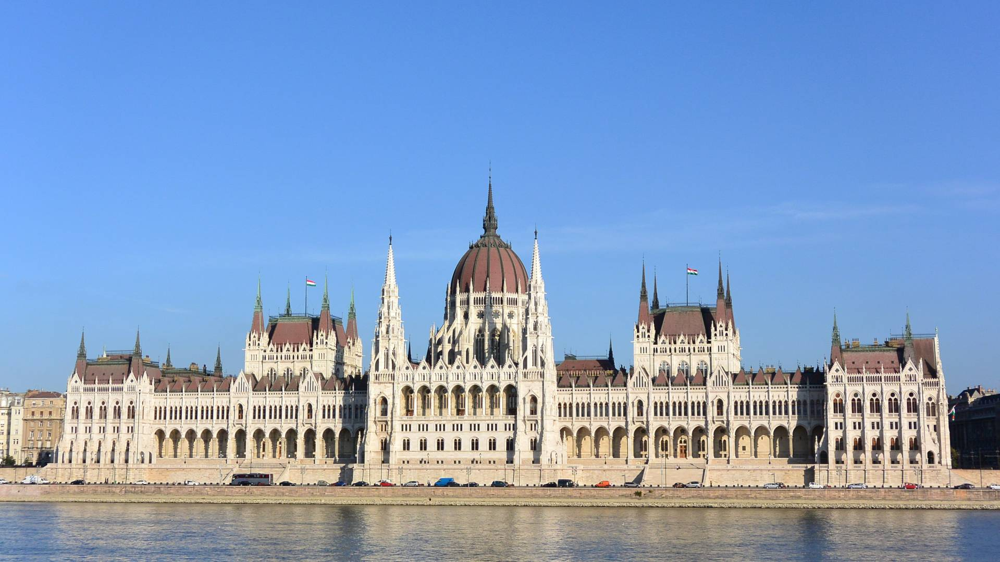
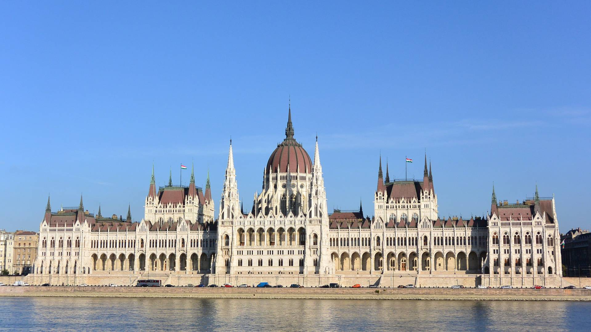

Hozni kell:
Indulás: 2023.05.18. 7:35-ös vonattal a Debreceni pályaudvarról
Érkezés: 2023.05.19. 15:51-re a Debreceni pályaudvarra
Az oda-vissza úton vonattal fogunk utazni.
A városban tömegközlekedéssel fogunk menni az Aquincumhoz és onnan vissza a szállásra.
A szállás a 9449-es Hostel Budapestben lesz a VII. kerületben.
Érkezés-Távozás: A szálláshelyet 15 órától lehet elfoglalni, és távozáskor 11 óráig kell elhagyni.
Szobák: 1, 2, 4, 5, 6, 8, illetve 10 férőhelyesek, mosdóval/zuhanyzóval felszereltek.
Megközelítése: a 4-es, 6-os villamos útvonala mellett fekszik, minden pályaudvarról maximum 10 perc alatt elérhető.
       Érkezést követően (kb. 9:40-50 között) átbuszozunk az Aquincumhoz, amelyet egy tárlatvezetés keretén belül járunk fel.
Egy tárlatvezetés maximum 30 fő, ezért két csoportra bomlunk, csoportonként egy tanárral.
A múzeum után elfoglaljuk a szállást, ahol tartunk kb. 2 óra csendes pihenőt.
A pihenő után elmegyünk egy városnéző körútra a közelben, amely során megtekintjük például a Dohány utcai zsinagógát, az Országházat, a Szent István bazilikát és a Magyar Állami Operaházat is, és ha az idő engedi fagyizunk vagy sütizünk egyet. Majd visszatérünk a szállásra és megvacsorázunk. Takarodó legkésőbb 22:00-kor.
 


Ébresztő reggel 7:00-kor.
Reggeli kb. 8:00-kor, majd uána mindenki összepakol és legkésőbb 10 órakor elhagyjuk a szállást, és gyalog átsétálunk a Terror háza múzeumba.
A látogatás alatt szintén két csoportra oszlunk (1 csoport, 1 kisérővel) a tárlatvezetés létszáma miatt, 1 tárlatvezetés max. 30fő. Egy tárlatvezetés kb. 1.5 óra, és két tárlatvezetés közötti idő maximum 10 perc.
Múzeumtúra után a közelben megebédelünk (pl.: Pizzéria), majd kisétálunk a Nyugati pályaudvarra, ahonnan 13:23-as vonattal indulunk haza.